A Java 7 Interface is a type comprising a group of public method headers (return type and signature). It may also include constant declarations that are static public by default. Methods are not implemented in the interface definition. Implementation takes place in classes that use (implement) the interfaces. An interface only specifies behaviour: one is not allowed to create objects of an interface. However, an interface type variable may refer to (be bound to) an object of a class that implements that interface. Java 8 interfaces have additional features that are not addressed here.
Refer to the recommended directory structure again shown in Figure 1 below.
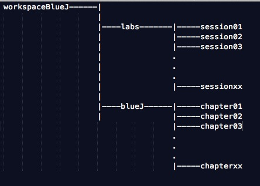.
For this lab we will be working from directory session10.
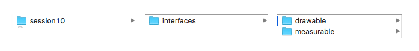
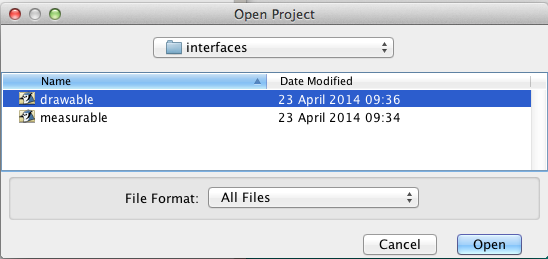
On opening the project you should be presented with a series of rectangles representing classes that we have met in earlier labs. These are illustrated in Figure 4.
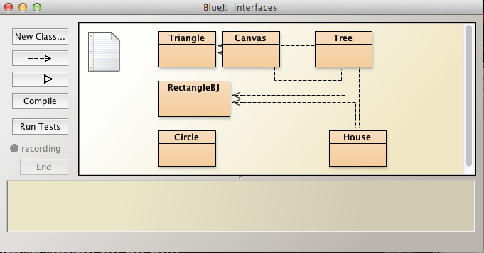
Open Circle source code and observe that we have added an overloaded constructor to allow a user to define the circle's color. This is illustrated in Figure 5.
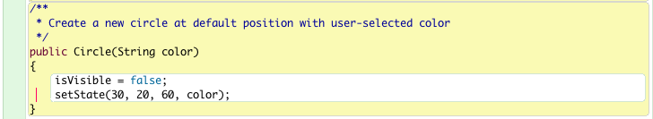
We have made this trivial change to differentiate between various circles that we shall construct in demonstating the unifying power of Java interfaces.
We shall also use the RectangleBJ class. Its overloaded constructor already provides for different colors and so refactoring is unnecessary.
Here we shall demonstrate the use of interfaces to unify common behaviour.
In the BlueJ drawable project create a class InterfaceDemo.
Populate this class with
Here is the class wrapper:
public class InterfaceDemo
{
}Add data:
ArrayList<Circle> circles = new ArrayList<>();
ArrayList<RectangleBJ> rectangles = new ArrayList<>();Add an import statement as the top line in the InterfaceDemo file to access ArrayList:
import java.util.ArrayList;Initialize the data in the constructor:
public InterfaceDemo()
{
circles.add(new Circle(30, 20, 60, "red"));
circles.add(new Circle(40, 50, 70, "blue"));
circles.add(new Circle(50, 60, 80, "green"));
circles.add(new Circle(60, 70, 90, "black"));
rectangles.add(new RectangleBJ(160, 30, 60, 150, "red"));
rectangles.add(new RectangleBJ(170, 40, 70, 160, "blue"));
rectangles.add(new RectangleBJ(180, 50, 80, 170, "green"));
rectangles.add(new RectangleBJ(190, 60, 90, 180, "black"));
}The choice of coordinates and colors ensure the objects, when drawn, will be distinguishable from each other.
Now, traverse these objects and invoke the makeVisible methods:
public void makeVisible()
{
for(Circle c : circles)
{
c.makeVisible();
}
for(RectangleBJ r : rectangles)
{
r.makeVisible();
}
}Here is the complete class:
import java.util.ArrayList;
public class InterfaceDemo
{
ArrayList<Circle> circles = new ArrayList<>();
ArrayList<RectangleBJ> rectangles = new ArrayList<>();
public InterfaceDemo()
{
circles.add(new Circle(30, 20, 60, "red"));
circles.add(new Circle(40, 50, 70, "blue"));
circles.add(new Circle(50, 60, 80, "green"));
circles.add(new Circle(60, 70, 90, "black"));
rectangles.add(new RectangleBJ(160, 30, 60, 150, "red"));
rectangles.add(new RectangleBJ(170, 40, 70, 160, "blue"));
rectangles.add(new RectangleBJ(180, 50, 80, 170, "green"));
rectangles.add(new RectangleBJ(190, 60, 90, 180, "black"));
}
public void makeVisible()
{
for(Circle c : circles)
{
c.makeVisible();
}
for(RectangleBJ r : rectangles)
{
r.makeVisible();
}
}
}Test the work to date as follows:
The result is depicted in Figure 1.
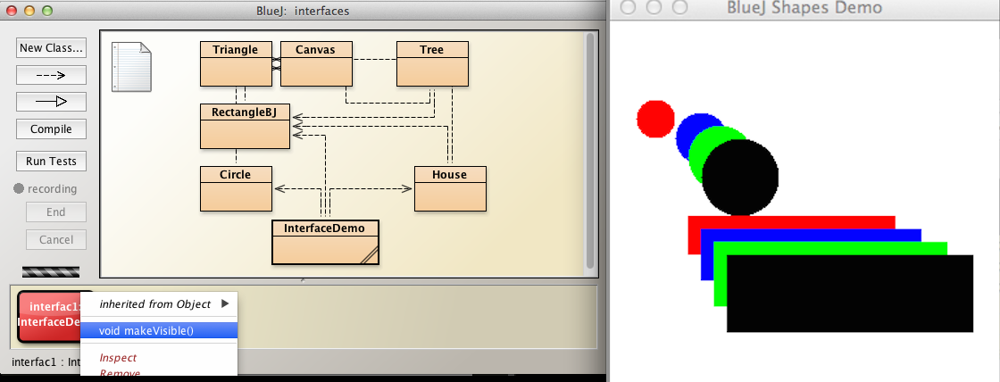
First we shall create a Java interface named Drawable by placing the cursor anywhere in the BlueJ drawable project window, right clicking and selecting New Class.
In the widow that then appears type Drawable in the Class Name textbox and select the button opposite Interface (Figure 1).
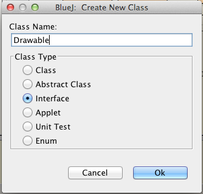.
This will create a Drawable interface, represented by a rectangle in the project window as illustrated in Figure 2.
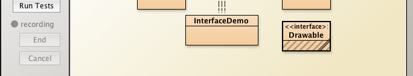
Open the Drawable source code and replace the autogenerated code with the following interface defintion.
public interface Drawable
{
void display(boolean show);
}Any class that uses this interface will be obliged to implement a display method.
This method takes a boolean parameter:
Open the Circle source code and change the line containing the class name from:
public class Circleto
public class Circle implements DrawableNow attempt to compile Circle.
You will encounter a compile-time error (See Figure 3).
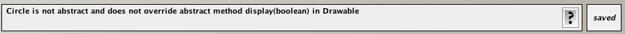
The reason for the error is that we have not implemented the Drawable method display.
Add a wrapper for this method to Circle:
public void display(boolean show)
{
}We will complete the implementation of the method shortly.
First attempt to compile the Circle class again.
The implementation of display is simple since Circle already has two methods that we can use:
Here's the completed display method:
public void display(boolean show)
{
if(show == true)
{
makeVisible();
}
else
{
makeInvisible();
}
}Check that Circle compiles once this method has been added.
Repeat for RectangleBJ:
In the next step we shall use the magic of interfaces to display, not an ArrayList of Circle object references but an ArrayList of Drawable references to Circle objects.
In this step we shall modify InterfaceDemo class as follows:
Add the Drawable list declaration as a field in InterfaceDemo:
ArrayList<Drawable> elements = new ArrayList<>();Next modify the constructor by adding the following code block:
//add Circle and RectangleBJ objects to the Drawable list
elements.add(new Circle(30, 20, 60, "red"));
elements.add(new Circle(40, 50, 70, "blue"));
elements.add(new Circle(50, 60, 80, "green"));
elements.add(new Circle(60, 70, 90, "black"));
elements.add(new RectangleBJ(160, 30, 60, 150, "red"));
elements.add(new RectangleBJ(170, 40, 70, 160, "blue"));
elements.add(new RectangleBJ(180, 50, 80, 170, "green"));
elements.add(new RectangleBJ(190, 60, 90, 180, "black"));Compare what we have done above to what we previously did: previously we
Here we have:
Finally we write a method that we shall name demoInterfaceUsage to invoke the Circle display methods and the RectangleBJ display methods:
public void demoInterfaceUsage()
{
for(Drawable element : elements)
{
element.display(true);
}
}Compile and test by creating a new Interface object and then invoking the demoInterfaceUsage method.
The result should be similar to that illustrated in Figure 1.
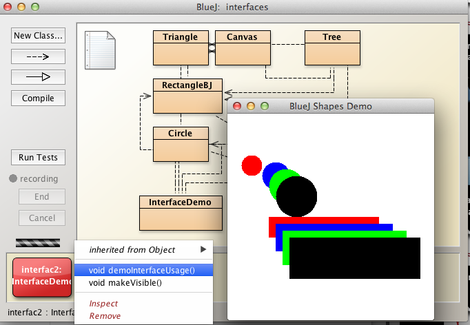
Open the project named measurable and observe the classes present, namely
Please note that the classes Cone, Rectangle and Circle differ from those classes of the same name that we have worked with in previous labs.
Measure class: open the source file in the editor and note the presence of three method wrappers, all having the same name, maximum, but different signatures as follows:
As you can see, the methods accept arrays of Cone, Circle and Rectangle objects and search through these arrays for the maximum value in the various properties of interest namely suface area (Cone), area (Circle) and perimeter (Rectangle).
Based on the contents of the above 3 figures, complete and compile the Measure class.
Observe that the three maximum methods are essentially similar. All three
MeasureTester class is, as the name suggests, a class to test these methods.
Test the Measure class as follow:
Invoke MeasureTester.maxRectanglePerimeter
Repeat similar tests and checks for
We have written three search algorithms to look for the largest value.
Would it not be better to use a single algorithm since the three algorithms comprise the same pattern?
We shall now use the Java interface type to create a single algorithm capable of sorting the Cone, Rectangle, Sphere and Circle object arrays.
In the measurable project:
double getMeasure();Here is the complete Measurable interface:
public interface Measurable
{
double getMeasure();
}public class Cone implements MeasurableCone now implements the Measurable interface.
Compile the class. As expected we receive a message indicating a failure to compile:
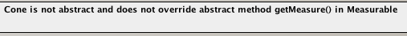
Omitting to implement the getMeasure method has resulted in this error.
public double getMeasure()
{
return surfaceArea();
}Modify Circle and Rectangle so that they also implement Measurable:
Add getMeasure to each of Circle and Rectangle:
public double getMeasure()
{
return area();
} public double getMeasure()
{
return perimeter();
}The final step is to utilize getMeasure within the Measure class as a replacement to the three maximum methods we've already written.
static double maximum(Measurable[] object)
{
double max = object[0].getMeasure();
for(int i = 1; i < object.length; i += 1)
{
double val = object[i].getMeasure();
max = val > max ? val : max;
}
return max;
}Study this method carefully:
The elegance of this design approach is that only one method is now required instead of the three previous ones.
Finally, we will test the new system.
It was suggested above that you comment out rather than delete the three original maximum methods.
public class Measure
{
static double maximum(Measurable[] object)
{
double max = object[0].getMeasure();
for(int i = 1; i < object.length; i += 1)
{
double val = object[i].getMeasure();
max = val > max ? val : max;
}
return max;
}
}Add the class Exercise1 provided below to the drawable project.
Add three methods to this class:
Do not use Java interfaces.
import java.util.ArrayList;
public class Exercise1
{
ArrayList<Circle> circles = new ArrayList<>();
ArrayList<RectangleBJ> rectangles = new ArrayList<>();
public Exercise1()
{
circles.add(new Circle(30, 20, 60, "red"));
circles.add(new Circle(40, 50, 70, "blue"));
circles.add(new Circle(50, 60, 80, "green"));
circles.add(new Circle(60, 70, 90, "black"));
rectangles.add(new RectangleBJ(160, 30, 60, 150, "red"));
rectangles.add(new RectangleBJ(170, 40, 70, 160, "blue"));
rectangles.add(new RectangleBJ(180, 50, 80, 170, "green"));
rectangles.add(new RectangleBJ(190, 60, 90, 180, "black"));
}
}Add the class Exercise2 provided below to the drawable project.
Add three methods to this class:
import java.util.ArrayList;
public class Exercise2 implements Drawable
{
//Here declare and instantiate an array list of Drawable type
public Exercise2()
{
shapes.add(new Circle(30, 20, 60, "red"));
shapes.add(new Circle(40, 50, 70, "blue"));
shapes.add(new Circle(50, 60, 80, "green"));
shapes.add(new Circle(60, 70, 90, "black"));
shapes.add(new RectangleBJ(160, 30, 60, 150, "red"));
shapes.add(new RectangleBJ(170, 40, 70, 160, "blue"));
shapes.add(new RectangleBJ(180, 50, 80, 170, "green"));
shapes.add(new RectangleBJ(190, 60, 90, 180, "black"));
}
private void makeVisible()
{
//TODO
}
private void makeInvisible()
{
//TODO
}
public void display(boolean show)
{
//TODO
}
}In the class Exercise3 below (also added to drawable project) invoking display(true) renders an array of objects of type Circle and RectangleBJ, references to which are stored in a single list of interface type Drawable variables. See Figure 1: 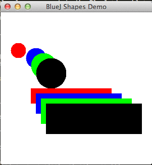
In this exercise do the following:
import java.util.ArrayList;
public class Exercise3 implements Drawable
{
ArrayList<Drawable> shapes = new ArrayList<>();
public Exercise3()
{
shapes.add(new Circle(30, 20, 60, "red"));
shapes.add(new Circle(40, 50, 70, "blue"));
shapes.add(new Circle(50, 60, 80, "green"));
shapes.add(new Circle(60, 70, 90, "black"));
shapes.add(new RectangleBJ(160, 30, 60, 150, "red"));
shapes.add(new RectangleBJ(170, 40, 70, 160, "blue"));
shapes.add(new RectangleBJ(180, 50, 80, 170, "green"));
shapes.add(new RectangleBJ(190, 60, 90, 180, "black"));
shapes.add(new Triangle(... "red"));
shapes.add(new Triangle(... "blue"));
shapes.add(new Triangle(... "green"));
shapes.add(new Triangle(... "black"));
}
public void display(boolean show)
{
...
}
}Write a method named maximum in the Measure class in the measurable project.
Add a field in MeasureTester in the measurable project:
int numberSpheres = 25;
Write a method named maxSphericalSurfaceArea in MeasureTester
Figure 1 shows a section of a pipe
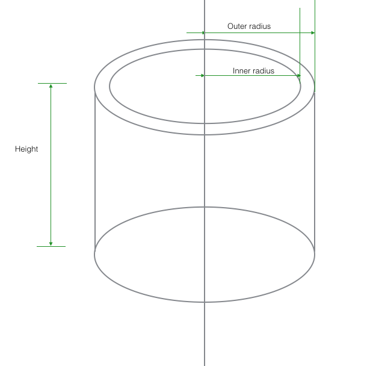
The volume of material in a section of such a pipe is:
Create a Pipe class to represent the above pipe length:
Here is the skeleton code:
public class Pipe implements Measurable
{
//...
//...
//...
public Pipe(int radiusOuter, int radiusInner, int height)
{
//...
//...
//...
}
public double volumeMaterial()
{
return 0;
}
public double getMeasure()
{
return 0;
}
}In the MeasureTester class:
Write a method named maxPipeMaterialVolume
The method has this header:
Test as follows:
Modify the following classes so that they implement Measurable and override getMeasure
Test as follows:
You are provided with a class MeasurableTester
static double maximum(Measurable[] objects)
{
double max = objects[0].getMeasure();
for(Measurable object : objects)
{
double val = object.getMeasure();
max = val > max ? val : max;
}
return max;
}You are also provided with a class MeasureTester.
The fundamental difference between the two approaches is that in the case of MeasurableTester only one maximum method is invoked for the entire set of shapes whereas in the case of MeasureTester each shape has its own dedicated maximum method.
This major reduction in code effected by using the behaviour-unifying properties of Java interfaces has many advantages such as:
Rewrite the following method replacing the ternary operator with an if - else construct:
static double maximum(Measurable[] object)
{
double max = object[0].getMeasure();
for (int i = 1; i < object.length; i += 1)
{
double val = object[i].getMeasure();
max = val > max ? val : max;
}
return max;
}11.1 Modify the SelectionSort class provided below so that it sorts Comparable types rather than int[] arrays.
11.2 Modify Message and Circle classes as follows:
11.3 Test that these changes allow one to use the same sort algorithm to sort different object types by executing the main method in the Test class provided below.
See Figure 1 for class diagram layout.
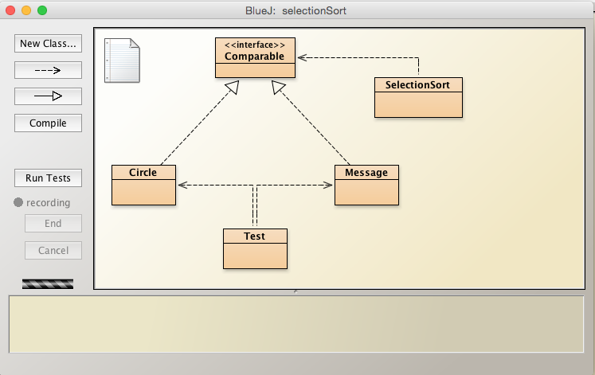
Here is the interface definition:
public interface Comparable
{
int compareTo(Comparable comparable);
}Here is a class that facilitates sorting of an int[] array:
public class SelectionSort
{
public static void sort(int[] a)
{
for (int i = 0; i < a.length; i += 1)
for (int j = i; j < a.length; j += 1)
if (a[j] < a[i])
exchange(a, i, j);
}
private static void exchange(int[] a, int i, int j)
{
int val = a[i];
a[i] = a[j];
a[j] = val;
}
}Here are simplified versions of Message and Circle classes:
public class Message
{
String message;
public Message(String message)
{
this.message = message;
}
@Override
public String toString()
{
return message + "\n";
}
}public class Circle
{
int radius;
public Circle(int radius)
{
this.radius = radius;
}
@Override
public String toString()
{
return "radius: " + String.valueOf(radius) + "\n";
}
}The following class, Test, may be used to verify that the code refactoring results in correct output when the Test.main method is executed.
public class Test
{
static Message[] messages = {
new Message("hey diddle diddle"),
new Message("the cat and the fiddle"),
new Message("cow she jumped over the moon"),
new Message("little dog laughed"),
new Message("to see such fun"),
new Message("dish ran away with the spoon")
};
static Circle[] circles = {
new Circle(88),
new Circle(2),
new Circle(33),
new Circle(77),
new Circle(21),
new Circle(12)
};
public static void print(Comparable[] comparables)
{
for(Comparable comparable : comparables)
System.out.print(" " + comparable);
System.out.println();
}
public static void main(String[] args)
{
print(messages);
SelectionSort.sort(messages);
print(messages);
print(circles);
SelectionSort.sort(circles);
print(circles);
}
}Expected test output is shown in Figure 2.
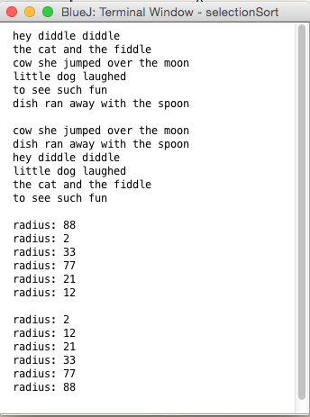